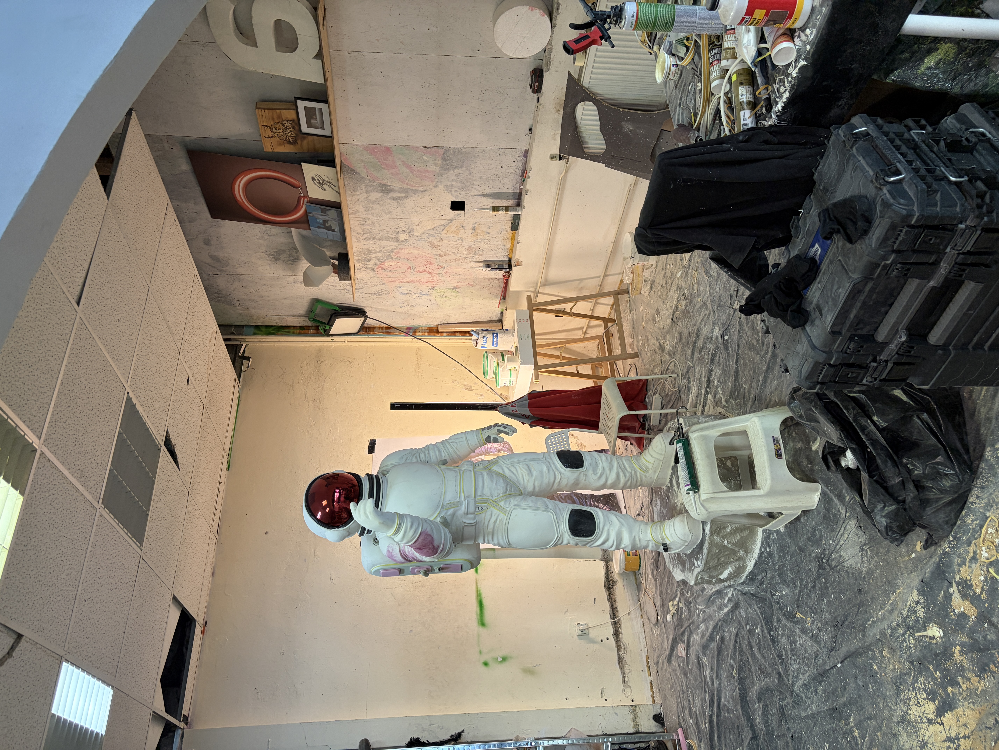
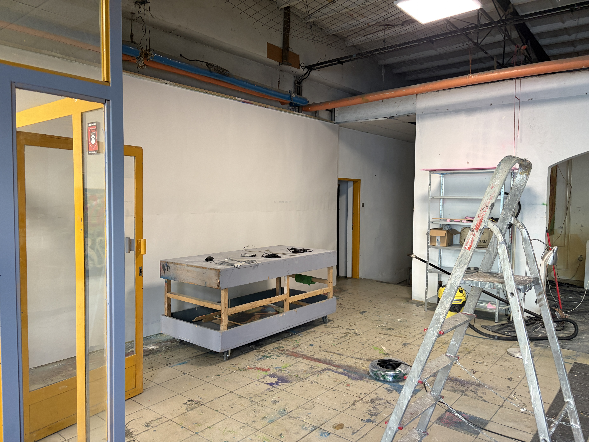
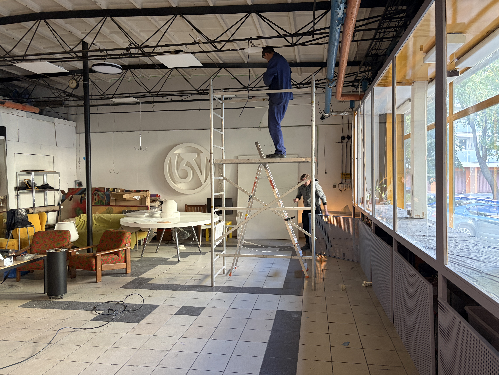
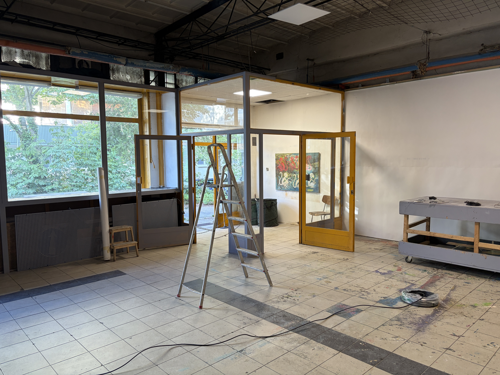
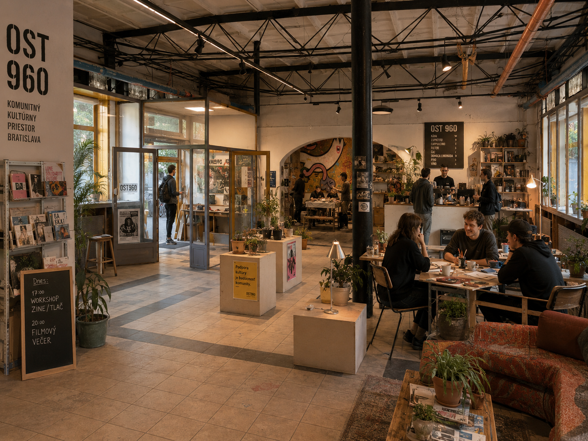
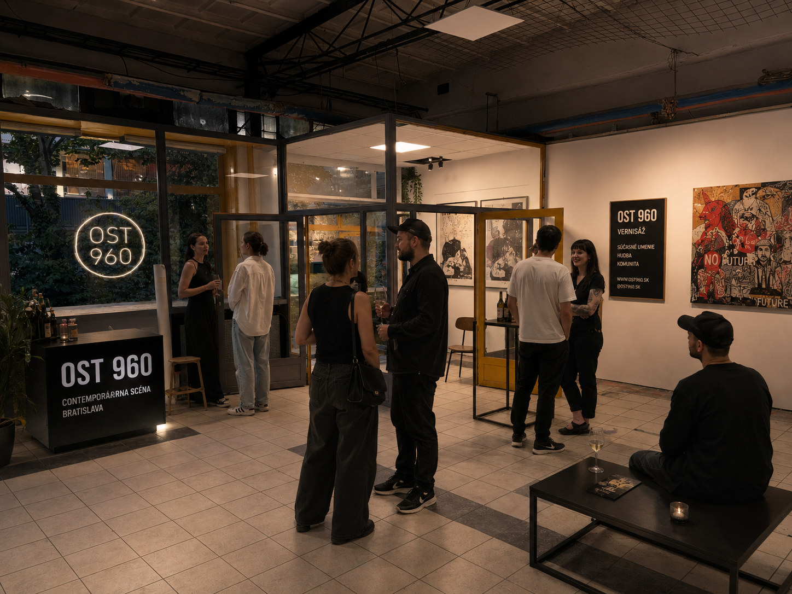

Galéria a výstavy
Priestor pre subkultúrne umenie, street art, fotografiu, grafiku, ilustráciu, objekty a experimentálne formy vizuálnej tvorby.
Odovzdávacia stanica tepla Bratislava
Kedysi odovzdávala teplo.
Dnes môže odovzdávať energiu kultúre.
OST 960 je pripravovaný nezávislý kultúrny priestor v Karlovej Vsi. Industriálny objekt chceme premeniť na galériu, komunitné miesto a otvorenú platformu pre subkultúrne, mestské a nezávislé umenie v Bratislave.
OST 960 vzniká ako neziskový kultúrny projekt s cieľom oživiť priestor bývalej odovzdávacej stanice tepla a sprístupniť ho verejnosti.
Chceme vytvoriť miesto, kde sa stretáva umenie, komunita, experiment, lokálna scéna a ľudia, ktorí hľadajú kultúru mimo mainstreamu.
Toto je skutočný priestor. Práve sa buduje. Každý záber je autentický dokument premeny industriálneho objektu na kultúrne miesto.










Máj 2025 Budovanie prebieha. Priestor sa mení.
Priestor pre subkultúrne umenie, street art, fotografiu, grafiku, ilustráciu, objekty a experimentálne formy vizuálnej tvorby.
Otvorenia výstav, diskusie, malé koncerty, DJ sety, premietania a komunitné večery.
Tvorivé dielne, tlač, ziny, malé vydavateľské projekty, komunitné knižnice a otvorené ateliéry.
Miesto pre stretávanie, spoluprácu, lokálne iniciatívy, dobrovoľníkov, autorov a návštevníkov.
Päť vizualizácií ukazuje potenciál industriálneho priestoru — od galérie cez komunitné stretnutia až po živé večerné eventy.

Svetlý výstavný priestor s industriálnou atmosférou, miestom pre umenie a pohyb ľudí.



Raw mood, posters, neon, večerné eventy, subkultúra.

Večerný kultúrny program, ľudia, umenie, rozhovory.
Denný komunitný priestor, workshopy, ziny, káva, tvorba.
Bratislava potrebuje dostupné nezávislé priestory, ktoré dávajú šancu mladým autorom, subkultúrnej scéne a komunitám mimo klasických inštitúcií. OST 960 môže byť miestom, ktoré prepája verejnosť, lokálnych tvorcov a mestskú kultúru v autentickom industriálnom priestore.
Hľadáme partnerov, podporovateľov, dobrovoľníkov, umelcov a ľudí, ktorí chcú pomôcť premeniť OST 960 na živý kultúrny priestor v Karlovej Vsi.
Projekt je v príprave. Ak máte záujem o spoluprácu, partnerstvo alebo chcete vedieť viac — ozvite sa nám.
info@ost960.skKontaktné údaje sa aktualizujú — projekt je aktívne v príprave.